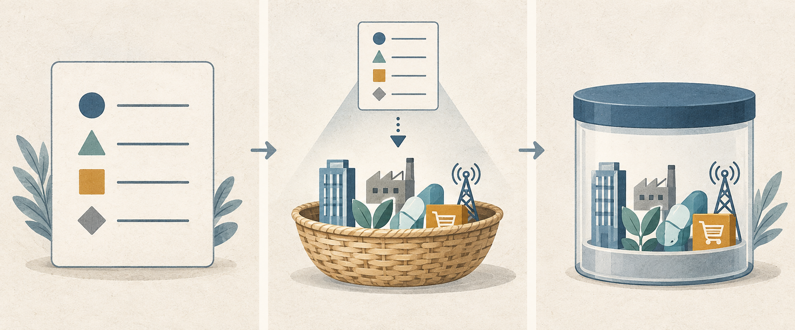

SH000905
持有中证500
PE / 10年分位32.45 / 77%
PB / 10年分位2.35 / 79%
当前 PE 位于近10年历史的 77.2% 分位，命中“持有”区间。
来源：雪球基金（近10年历史样本，项目本地重算分位）
2026年9月16日为星期三，不在上交所、深交所公布的2026年休市安排内。四个指数的最近已完成交易日均为2026年9月15日。
低成本要看全部代价。管理费只是其中一项，交易、跟踪和产品结构也会影响长期结果。
记录四项“持有”信号。我们在下一次执行计划前核对管理费、托管费、交易摩擦和跟踪质量。
“持有”不是加码。不用基金单位净值判断贵贱，不用一项低费率代替全成本检查，不借钱投资。
事实：四个指数的PE分位均处于“持有”区间。国家统计局公布的8月工业、消费和投资数据展示不同方向。推断：企业盈利环境存在结构差异。不能据此判断：单组宏观数据不提供指数方向，也不改写既定PE规则。
PE 决定行为，PB 辅助理解温度
当前 PE 位于近10年历史的 77.2% 分位，命中“持有”区间。
来源：雪球基金（近10年历史样本，项目本地重算分位）
当前 PE 位于近10年历史的 64.0% 分位，命中“持有”区间。
来源：雪球基金（近10年历史样本，项目本地重算分位）
当前 PE 位于近10年历史的 42.2% 分位，命中“持有”区间。
来源：雪球基金（近10年历史样本，项目本地重算分位）
当前 PE 位于近10年历史的 53.9% 分位，命中“持有”区间。
来源：雪球基金（近10年历史样本，项目本地重算分位）
只保留会影响长期决策的重要变量
事实：规模以上工业增加值同比增长5.2%，比上月加快0.7个百分点；社会消费品零售总额同比增长0.4%；1—8月固定资产投资下降7.2%。推断：供给侧增长与内需弱势并存，行业盈利环境存在分化。不能据此判断：这组数据不能推导指数涨跌或个股结果。
查看一手来源每天随机读透一个完整观点，而不是收藏更多标题
《指数基金投资指南》 · 第2章，PDF 34-54页
核心主张：指数规定股票选样和计算方法，基金把规则变成可持有的产品。我们分开判断指数、基金和交易账户。
“指数是一个选股规则。”
今天连接：今日四个指数给出“持有”信号。估值规则解答“是否触发行为”，产品检查解答“用什么承载暴露”，两者不互相替代。
不要这样做：不用指数名称替代基金尽调，不把书中的旧费率、产品案例或美国账户制度套用于今天的中国账户。
